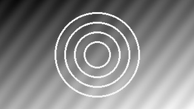
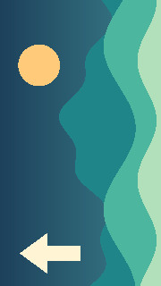

CHEZCAT / BUILD 0.28
More pictures. Our own decoder.
JPEG images now join PNG, BMP and PPM. These original scenes exercise ordinary and progressive files, grayscale, color sampling and orientation.
One scene, two JPEG encodings.
The same landscape is encoded as baseline and progressive JPEG. Both should show the complete scene after loading.
Progressive
The decoder combines the scans before displaying the result.
Grayscale and orientation.
Grayscale

This file contains one image component.
Camera orientation

The orientation tag rotates this image into its intended viewing direction.
Check the pixels.
Resize the window or change the zoom. The two landscape images should keep their proportions and wrap onto separate rows in a narrow window.
Press Ctrl+I to see which images loaded and their decoded dimensions. The local HTTP and HTTPS demos can also serve this page with compressed HTML, CSS and JPEG responses.